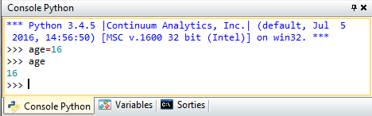
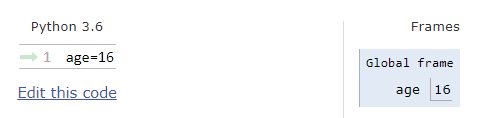

Depuis EduPython (IDLE PyScripter), saisir ces lignes de programme dans la Console Python (interpréteur Python en mode interactif)
Pour affecter (on dit aussi assigner) la valeur 16 à la variable nommée age :

Afin que vous gardiez une trace de votre travail, saisir les différentes lignes de programme dans la zone de saisie puis exécuter  pour voir le résultat dans la console Python.
pour voir le résultat dans la console Python.

Désormais vous pourrez utiliser la fonction print() pour afficher la valeur de la variable comme un "outil de debogage" (aide à analyser les bugs d'un programme).
Pour une meilleure compréhension des scripts et et éviter l'usage du print(), vous pouvez utiliser le site web PythonTutor et visualiser l'exécution pas à pas : http://pythontutor.com/visualize.html#mode=edit

Remarque: Il est possible en langage Python de réaliser des affectations multiples:
>>> a,b = 2,3
>>> print(a)
>>> print(b)
En programmation, le codage de la variable diffère en fonction de la donnée utilisée (booléen, nombre entiers, nombre à virgule, caractères...). On parle alors de type de variable.
En langage Python, le typage est dynamique ce qui signifie que c’est l’instruction d’affectation qui va définir le type de la variable.
La fonction type() retourne le type de la variable :
>>> print(type(age))
int est le type des nombres entiers.
>>> x=0b11111011101
>>> print(x)
>>> y=0x7DD
>>> print(y)
Rappel:
La notation « 0b… » indique que la valeur du nombre est en binaire.
La notation « 0x… » indique que la valeur du nombre est en hexadécimal.
>>> binaire=bin(25)
>>> print(binaire)
>>> decimal=0x1FA
>>> print(decimal)
>>> hexadecimal=hex(506)
>>> print(hexadecimal)
Commenter et documenter son programme sont essentiels pour maintenir un code clair et pour faciliter la collaboration avec d'autres personnes. Cette pratique de programmation permet également de se rappeler ultérieurement l'utilité de telle ou telle variable, méthode, etc...
>>> # ceci est un commentaire
>>> age = age + 1 # en plus court : age += 1
>>> print(age)
>>> age = age - 3 # en plus court : age -= 3
>>> print(age)
>>> age = age*2 # en plus court : age *= 2
>>> print(age)
>>> a = 6*3 - 20
>>> print(a)
>>> b = 25
>>> c = a + 2*b
>>> print(b, c) # ne pas oublier la virgule
L'opérateur // donne la division entière :
>>> tour = 450//360
>>> print(tour)
L'opérateur % donne le reste de la division (opération modulo) :
>>> angle = 450%360
>>> print(angle)
L'opérateur ** donne la puissance :
>>> mo = 2**20
>>> print(mo)
>>> racine2 = 2**0.5
>>> print(racine2)
Créé avec HelpNDoc Personal Edition: Qu'est-ce qu'un outil de création d'aide ?